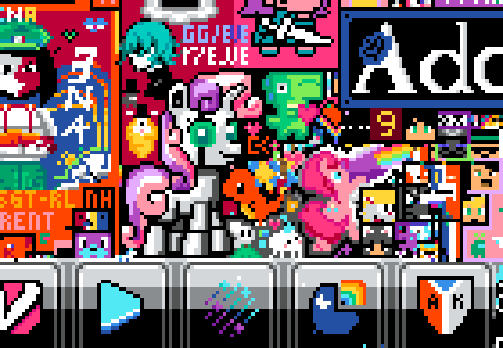
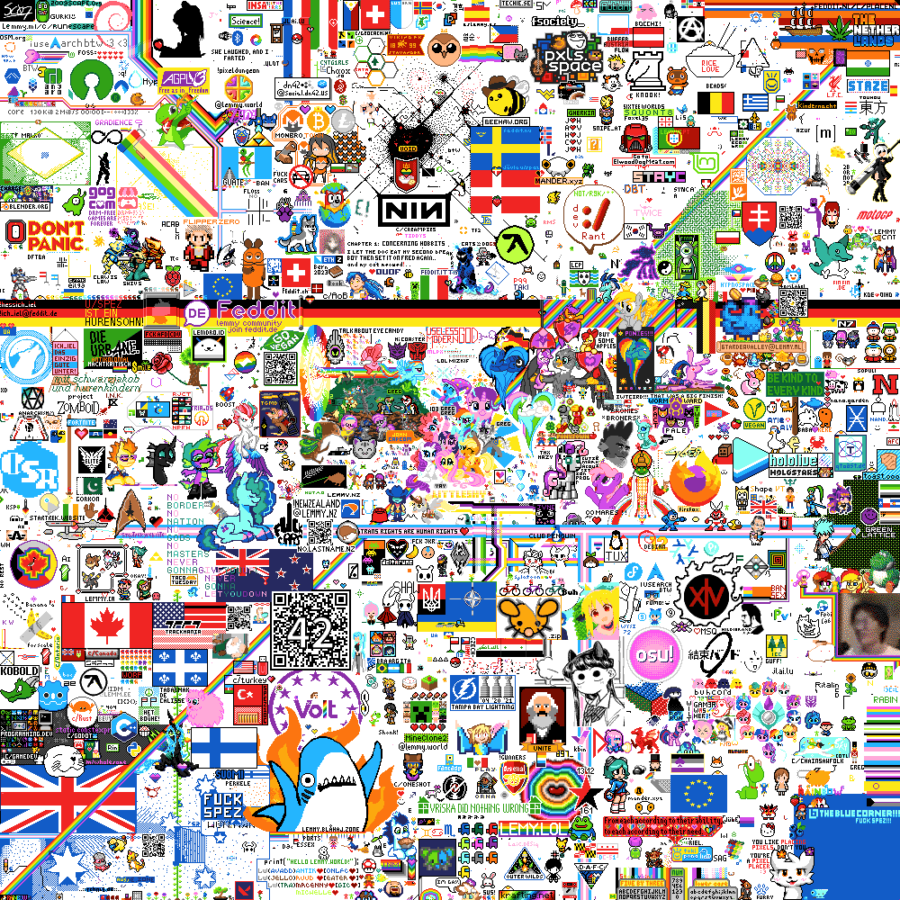

This year (of 2023), I, again, participated in r/place. And I have a lot to say about it.
Let’s start general plan:
So... I don’t really know how I was made aware of new r/place to happen. Maybe it was that we neared the date of june. I don’t know. But at the end, I joined the main guild on the 17 may, 2 weeks before april first.
Joining the main faction was the most basic thing I could do. I was aware ManePlace didn’t wanted to host the event again, and... Well, idk how I found it, but I did. (it may be shared on Mastodon by Lumière Élevé).
I didn’t planned on doing much this years (unlike last years). Probably just run a few bots on my bare metal server at OVH. Something that should be rather simple and maintenance free, especially when I had 60 account at my disposal from last time.
That didn’t prevented me from discussing a bit about bots. Learned about Painted Palette, and it seems to be really good and far better than what we had last year, with the built-in integration of tor and proxies. (I wasn’t a total stranger to this, as I think Lumière Élevé already shared a bit about that on Mastodon)
So... April first passed with nothing. I was fully aware that r/place was just speculation, so I just did nothing, thought stayed here. I eventually heard of the rumor it might be for Reddit’s anniversary, then 24th of june I think.
Then, on the 18 june, the joining of P3ACE (and the prohibition of bots, thought I see alts were already prohibited a few days prior) was announced. My original impression was... Mixed. I was kinda curious about this whole P3ACE things, but couldn’t find any amount of information, not even with a Reddit search. That’s a very bad thing, for a faction that claim to have so many members that they impact, to not care about explaining them what P3ACE is and how it works. The most I would end up learning about it in LittleShy’s NoPlace video (that I only watched during the event). And that’s a very bad think that where I got the most information was a video not even focused on P3ACE.
But I eventually just planned to not run bot at all and follow the rules. The 24th was just a day after the 3rd SkyTemple hack jam was done (and my birthday), so I would keep simple, and just place a few pixels without much involvement
Then, it wasn’t the 24th. Other extrapolated that finally r/place wouldn’t come back that year. Whatever, it was fine for me (but some other seemed to have took it very badly)
Eventally, it was announced it would be on the 20th of July. That’s a very good date for me. It would contain a week-end, and I had a clean mind and all.
After being invited by Lumière Élevé on Mastodon, I joined what is now named the Sweetiebotter Discord guild. Back then, plan was to have bots under manual activation for raids, even if I was aware there was some scaling of performance for raid. But I wanted to avoid a case where template have an issue that can’t be fixed quickly.
And that’s the part when I stopped writing this blog the first time. It’s 12 september, and I have far more sparse memory. Should really take the practice of taking notes while doing things...
What I did back then is now unclear, this will be far less concise that what I expected.
The thing I can remember is that I had some issue setting up the bot. Something specific in the way I set it up as a systemd service that caused network issues for some reason. I eventually quickly wrote a custom scheduler in Rust (not even ugly, not that ugly code in Rust is oxymoron), that did the work, and ran it on my personnal PC.
Then came a moment when we decided to perform a complete splitoff with our own art (already 1 or 2 day in). That mostly materialized in 1. Having a having a custom template with SweetieBot (which is where the name of Sweetiebotter come from, AFAIK)
I also ended up doing some maintenance work. While I didn’t worked in Painted Palette (Lumiére Élevé and someone else I think, not sure who) did a good job maintaining it, I did managed the template, mostly doing some fine tuning to optimise usage of bot power. I at times, where SB was under thread, disabled the template of the main guild (which we were still contributing to, with a lower weight)
I also heard that some diplomacy were performed on other neighbouring factions. I wasn’t involved with that.
Toward the end of the event, the anti-bot measure were having more true positive, which endangered SB. I eventally first made my first version of a browser-based auto-placer, based on the overlay, which should be harder to detect, then instead used a (better) version of it made by Ponywka (the original creator of said overloay, credir to them). Don’t know how efficient that was, but we eventually succesfully stayed on the canvas until the end.
The Pinkie Pie and Sweetie Bot is ours. The main guild had other art placed elsewhere too.
Then... The event ended (There are many other things, but I sadly lack the capacity to remember well what happened)
There was some mixup about who would publish that in the final clean. We (by that I mean me with passive agreement from others) submitted it via the main guild.
As far as I remember, thoughout the event, relation with the main server seemed to be mostly non-existant, thank to their disallowed discussing of using bots. I took that pretty well, but those who worked on the botting (mostly Lumière Élevé as far I can tell, maybe Ponywka, but less sure)
After that, there was also a weekly watch party and... The lemmy event.
This one was focused on Lemmy (which is a decentralized platform using the ActivityPub protocol (like Mastodon), but working in a similar way to Reddit). The event itself wasn’t decentralized. It was organized by a server owner, but anyone on anyserver could participate thanks to some well planned authentification system. The software itself was the same than the one used on PXLS.space.
There was no plan of using botting here. As far as I can tell, no one used botting here. And we got a really good result.
Plus it was the ocasion to chat a bit and connect more with Lemmy, plus it was far more peacefull (if still as much time consuming, the reason why I don’t participate in pxls.space).
I even made the small mare lover pixel art (based on an existing image from Derpibooru)
No specific order, in particular not ordered by importance or time of occurance
I think that doing a separate guild, given how the rule of the main guild evolved, was a good idea. The amount of separation with have is still questinable. I publicly stated I would have preferred to not have our own template, and not strawn to far into independance, but we went that way eventually, and that wasn’t either a big problem for me. To be honest, me too was a bit fed up about the perceived ignorance about botting on the main server. I don’t consider that as a problem.
However, our organisation was pretty bad, in particular when it comes to having a good communication and summary of what decision was taken, but also how. A clearer organisation should be better for the next time (as far as decision taking was concerned, it was mostly based on either nearly-complete approval of those present, or public voting via Discord reaction. But it worked well, and I like the idea).
I’m not angry toward them for preventing duplicate account or botting, even if I was slightly surprised. I’m however a bit unhappy with the lack of transparency regarding P3ACE. P3ACE seems to have a total lack of interest toward transparency against the individual users of memebers server, not even a Reddit post (that I could find).
I try to reduce my use of Reddit. Not because of the API debacle (I mean, Youtube does not have such API, and it doesn’t prevent yt-dlp, freetube or NewPipe from existing via reverse engineering, thought it’s certainly a bit harder to use. It’s a loss for Reddit, after all). More out of principle against any proprietary large social media (or software). Lemmy looks (and is) a good replacement, thought I haven’t totally switched. (for exemple, but not only, because they can decide toward making their API paid, or not at all. Even if they wouldn’t have put that into practive. I can say with a near-certainty that Mastodon, Lemmy or Matrix would never do that).
About the event itself... I thought it was too long, but most importantly, they seemed to have bad moderation tools. There were bots that just covered in a very obvious way big part of the canvas, using newly created accont, and they were unable to do anything but fill out the space. Not even do a localized rollback! That was a very critical lack of feature for them. I hope (for them) they’ll have that implemented next time they decide to do an event like that.
Also, I think I located the flaw they used to make a lot of account the same day. I’ll keep it private, but I’m sure others also found it. If interested, contact me. I’m not interested in exploiting it anymore. In particular, I’ve found someone else who discovered it too, and who is trying to make use of this for making a anti-bot bot. Contact me if you’re interested in entering contact with them.
I don’t think I’ll participate to any future r/place Reddit may do. I’ll certainly try to participate to any future lemmy canvas. The reason I want to stop with Reddit is that it was stressfull, while the lemmy one wasn’t (as much). Plus my general opinion on Reddit vs Lemmy. (thought there’s plan to extent it to the greater Fediverse, including Mastodon)
I’m bad at writing conclusion. So there’ll be no conclusion. Bye.